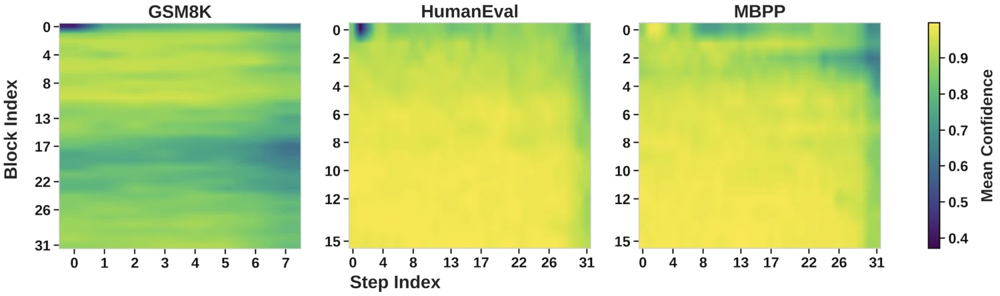
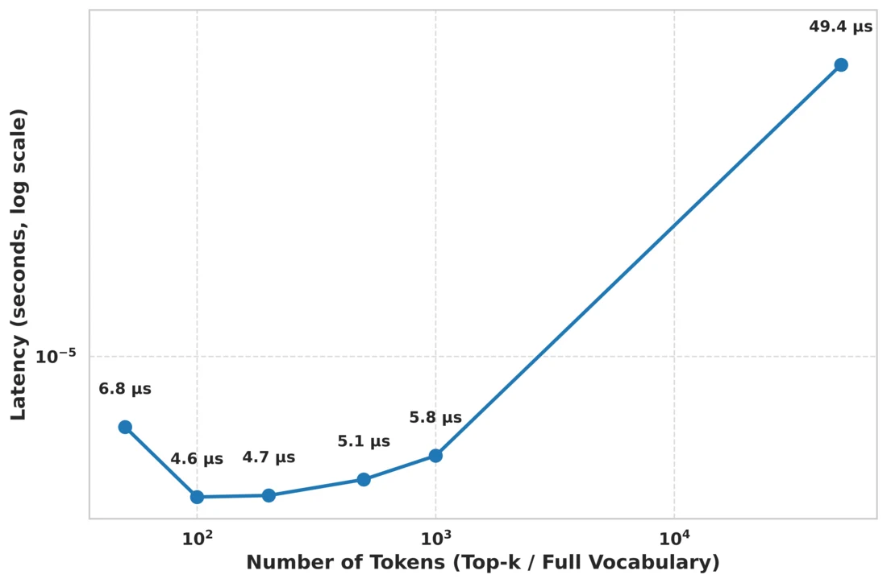
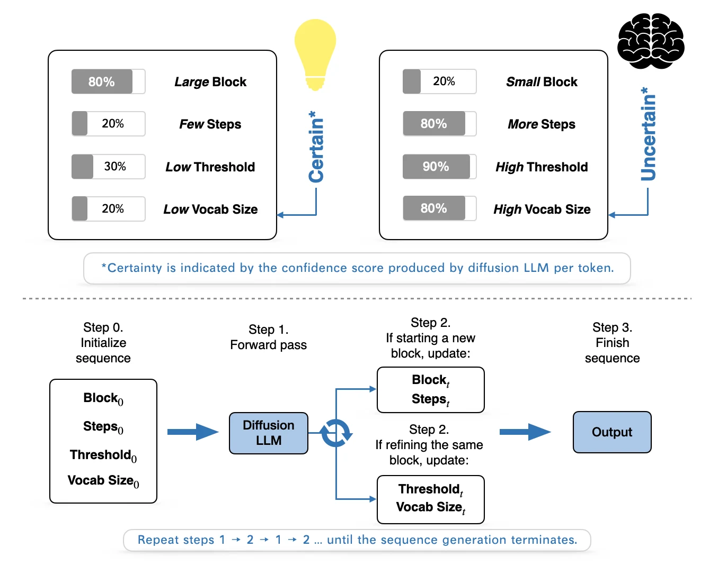

CadLLM
Improving the Throughput of Diffusion-based Large Language Models via a Training-Free Confidence-Aware Calibration

In short: diffusion LLMs already report how confident they are in each token. CadLLM uses that signal to spend compute where the model is still uncertain and save it where predictions have settled. It needs no retraining, and it improves throughput by 1.1–2.28× over the Fast-dLLM threshold baseline on LLaDA with competitive accuracy.
Why decoding is slow
An autoregressive language model produces tokens in a single left-to-right pass. A masked diffusion LLM instead refines a noisy sequence over many denoising steps, and this repeated refinement can make token generation much slower.
Fast-dLLM speeds this up by unmasking, in parallel, every position whose confidence clears a threshold. But its plan is static: fixed block sizes, a fixed number of steps per block, fixed sampling breadth, and a fixed commit threshold.
Confidence is not uniform
A static plan would be fine if every part of a sequence were equally hard, but it is not. Within a block, confidence rises quickly and then plateaus. Across blocks, some stabilize immediately while others stay uncertain. A fixed schedule therefore over-refines easy blocks and under-serves harder ones.

This work grew out of our earlier workshop paper, OSDT, which found that confidence trajectories are nearly identical across inputs from the same dataset, so thresholds calibrated on a single sequence can be reused for later inputs. CadLLM goes further by adapting block size, steps, vocabulary, and threshold during decoding.
Sampling breadth has its own cost. Softmax runs at every step, and running it over the full vocabulary of about 50K tokens is nearly an order of magnitude slower than using a small subset.

One signal, four policies
After each forward pass, CadLLM reads the model's confidence and feeds it back into a closed-loop controller. That single signal, together with generation progress, drives four decisions:
| Policy | What it controls | How it adapts |
|---|---|---|
| Block size Bt | How many tokens to decode in parallel | Larger when confidence is high |
| Steps St | How much refinement to allocate | More when confidence is low |
| Vocabulary Vt | How broad the candidate set is | Wider early, under low confidence, or when tokens start repeating |
| Threshold τt | When to commit a token | Strict at first, relaxing as generation progresses |

Each policy is a simple rule, using linear interpolation with clipping. For example, with c̄ as the recent mean confidence:
Bt = clip(Bmin + (Bmax − Bmin) · c̄, Bmin, Bmax)
This simplicity is deliberate. It isolates the benefit of adaptivity itself and adds only a multiply-add per policy per block at inference time.
Results
We compare against both Fast-dLLM variants on LLaDA, on a single NVIDIA H100.
| Benchmark | Length | CadLLM | Fast-dLLM (factor) | Fast-dLLM (threshold) |
|---|---|---|---|---|
| GSM8K | 256 | 78.01% 120.07 (1.33×) | 76.19% 119.18 (1.32×) | 79.00% 90.40 |
| GSM8K | 512 | 75.44% 107.79 (1.37×) | 74.45% 100.66 (1.27×) | 75.28% 78.77 |
| MATH | 256 | 32.06% 106.84 (1.34×) | 32.22% 109.97 (1.38×) | 32.40% 79.58 |
| MATH | 512 | 34.94% 117.21 (1.14×) | 35.40% 111.86 (1.08×) | 32.06% 103.18 |
| MBPP | 256 | 24.00% 99.86 (1.37×) | 21.20% 96.01 (1.31×) | 25.60% 73.15 |
| MBPP | 512 | 13.00% 104.62 (1.35×) | 13.20% 100.73 (1.30×) | 14.20% 77.71 |
| HumanEval | 256 | 35.97% 220.81 (2.28×) | 32.92% 132.28 (1.37×) | 37.19% 96.84 |
| HumanEval | 512 | 43.29% 163.72 (1.74×) | 41.46% 131.14 (1.38×) | 45.12% 94.41 |
Each cell shows accuracy, tokens per second, and improvement relative to the threshold baseline at the same generation length.
CadLLM also reaches 1.1–1.4× gains on DREAM across the same four benchmarks. It works with both prefix-only and dual KV caching.
What each policy contributes
Turning policies off one at a time on GSM8K shows that they play different roles:
| Mode | Tokens/s | Accuracy | NFE |
|---|---|---|---|
| All policies on | 121.72 | 78.01% | 86,816 |
| No adaptive vocabulary | 119.67 | 74.41% | 86,666 |
| No adaptive steps | 136.76 | 76.12% | 76,955 |
| No adaptive block size | 111.19 | 78.32% | 92,344 |
| No adaptive threshold | 34.57 | 78.17% | 337,664 |
| All policies off | 34.32 | 78.01% | 337,664 |
GSM8K at generation length 256. NFE is the number of function evaluations.
- Threshold dominates efficiency. Removing it cuts throughput by 71.6% and nearly quadruples forward passes, with accuracy nearly unchanged.
- Block size mainly affects computation, not accuracy.
- Steps trade speed against accuracy.
- Vocabulary mainly protects accuracy, with little effect on throughput.
Limitations
Results can remain sensitive to a few hyperparameters that may need careful tuning, so automated search is a natural next step. The linear rules are also intentionally minimal, and learned policies could tighten the trade-off between efficiency and quality further.
Citation
@inproceedings{shen2026cadllm,
title = {Improving the Throughput of Diffusion-based Large Language
Models via a Training-Free Confidence-Aware Calibration},
author = {Shen, Jucheng and Sarkar, Gaurav and Ro, Yeonju and
Sridhar, Sharath Nittur and Wang, Zhangyang and
Akella, Aditya and Kundu, Souvik},
booktitle = {Findings of the Association for Computational Linguistics: ACL 2026},
pages = {9826--9837},
year = {2026},
doi = {10.18653/v1/2026.findings-acl.478}
}